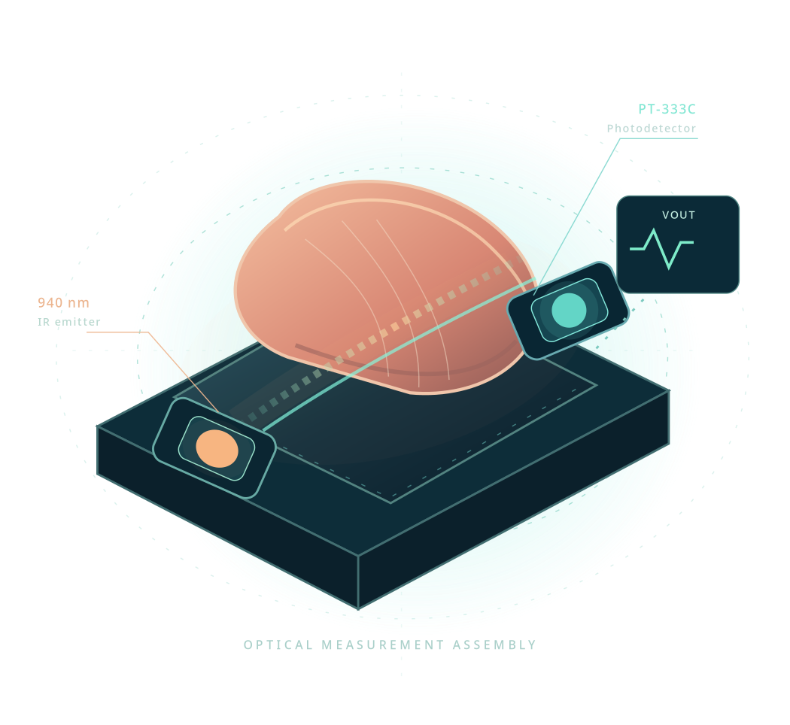

λ
Transmit
An Everlight IR-333A source illuminates the fingertip at a near-infrared wavelength of 940 nm.
This is the research website associated with our paper Non-Invasive Continuous Glucose Monitoring using Near Infrared Sensors and PSO-ANN Algorithm. Explore our 940 nm optical sensing system, PSO-trained calibration networks, measured glucose responses, and additional mathematical methods.
Infrared attenuation encodes changes in optical transmission. The front-end circuit conditions the photodetector response before the calibration network estimates glucose concentration.
An Everlight IR-333A source illuminates the fingertip at a near-infrared wavelength of 940 nm.
A PT-333C receiver captures transmitted light; filter and amplifier stages condition the photocurrent into voltage.
Sensor voltage, age and body mass index enter a PSO-trained neural regression model.
We fitted eight neural architectures and seven regression families using the measured optical responses. Select discovery-cohort calibration to inspect fitted agreement, or explore two additional transfer evaluations. Mathematical derivations and citations are in the Supplementary Methods.
Conventional scores computed from the predictions in the selected evaluation population.
| Neural architecture / regression | MAE | MSE | RMSE | R² |
|---|
The clinical experiment records paired instrument and reference measurements before glucose loading, after loading and at an additional random sampling time.
These values are calculated from the 30 paired instrument and reference readings shown in the article. They characterize the recorded optical instrument, independently of the neural-network scoring experiment.
Optical attenuation motivates calibration, while tissue scattering and subject-level variation shape the learned response.
Our analysis distinguishes the calibration model's agreement with its discovery observations from predictive transfer across people or measurement phases. This follows the established nomenclature of infrared chemometrics.
Thirty displayed glucose-loading records inform the optical calibration. We report model fit explicitly as discovery-cohort agreement, following ASTM E1655's framework for IR calibration development.
PSO learns compact neural weights. A Gaussian residual expansion captures smooth local structure; calibration strength depends on measured inputs and a stated reference-resolution assumption.
We retain separate discovery, participant-held-out and phase-held-out results in the computational record. NIR studies distinguish fitted calibration from prediction on independent samples.
Our 940 nm transmission geometry couples an emitter and photodetector around the fingertip, with signal conditioning and a nonlinear calibration stage. The optical response is studied as a model of the observed electrical voltage rather than a direct glucose absorbance measurement.

Our second clinical series records ten additional participants. HbA1c expresses long-term glycemia: the single glucose readings plotted here are distinct from the longitudinal average used by an HbA1c conversion.
The HbA1c expression connects a multi-month average glucose concentration (mg/dL) to percentage HbA1c. We retain the manuscript's reported HbA1c observations as an independently documented series; a single glucose value is not substituted for the required longitudinal mean.
Our study combines a miniature optical circuit, nonlinear voltage-to-glucose calibration, measured glucose loading responses, and a separate HbA1c analysis. The article and these computational files form one research record.
Suma K. V., Dharini Raghavan, Maya V. Karki, Narayana Sharma, and Gundu H. R. Rao.
Supplementary information extending the article: the 17-parameter neural representation, particle-swarm updates, regularized nonlinear calibration, reference uncertainty, and the precise definitions of calibration and transfer evaluations, with citations.